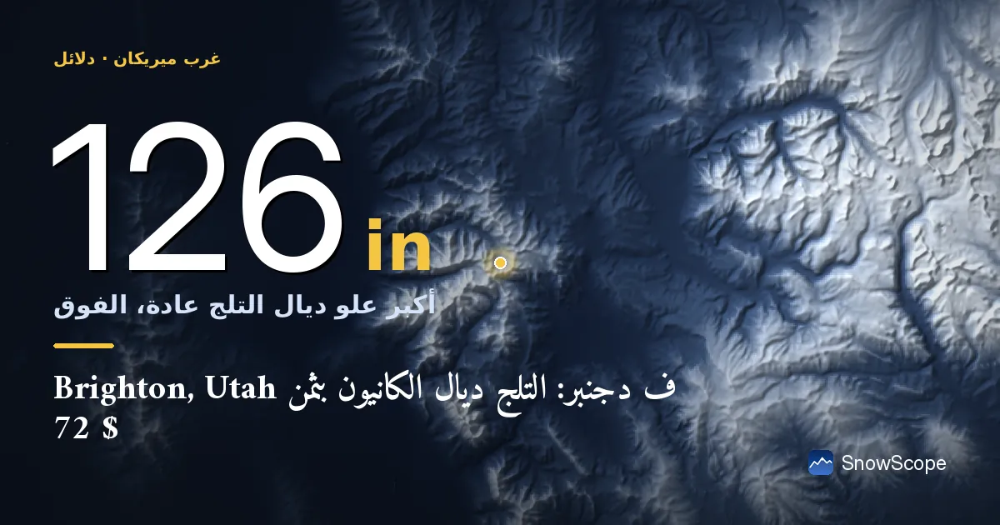

Brighton, Utah ف دجنبر: التلج ديال الكانيون بثمن 72 $
Brighton تقع فـ الأعلى ديال Big Cottonwood Canyon، وحيث ارتفاع الأساس ديالها تعطيها ميزة على المحطات الأخرى ديال Utah فـ ديسمبر. التلج فـ البداية ديال الموسم هنا موثوق بحال إن 89 بالمية من الشتوات اللي فاتو عندها علو ديال التلج فـ نص الشهر، وتذكرة يوم واحد تبدا من 72 دولار إذا حجزتي مقدما.
شوف توقعات التلج مباشرة ديال Brighton Resort فالتطبيق ديال SnowScopeالعلو ديال التلج، التنبيهات والخريطة 3D، فابور.
لاش الارتفاع مهم فـ ديسمبر
أساس Brighton عند 2,666 م معناها تبدا تجمع التلج أسابيع قبل المحطات ديال الوديان. بحال منتصف اكتوبر، التلج اللي تقعد عادة توصل نص الجبل فـ 2,925 م. هاد البداية الأولى مهمة بزاف: فـ 1 ديسمبر، والوقت اللي الأراضي اللي تحت عادة تكون عارية، نص الجبل هنا عندها حوالي 70 سم.
موقع الواد مهم بزاف. الهواء البارد تقع من فوق، والأراضي فـ قمة الجبل عند 3,185 م تقبض التلج اللي الأماكن التحتانية تاتوها. هاد حيت الفرق ديال العلو بين الأساس والقمة تبدا تقل طول الشهر.

متابعة ديسمبر أسبوع بـ أسبوع
بحال 15 ديسمبر، نص الجبل تكون فـ 94 سم، و 68 سم فـ الأساس و 115 سم فـ القمة. فـ تقريبا 9 من 10 شتوات على السجل، نص الجبل كانت عندها لأقل 50 سم بـ هاد التاريخ. حتى ديسمبر اللي تكون ضعيفة—واحد من عشرة—أعطات 52 سم هناك.
فـ يوم الميلاد الصورة تقوى. نص الجبل توصل 122 سم، و 98 بالمية من الشتوات عندها لأقل 50 سم. بحال 31 ديسمبر العلو التقليدي هو 133 سم فـ نص الجبل، و 100 بالمية من الشتوات فوق 50 سم.

سعر التذاكر والوقت اللي تشري فيه
Brighton تستعمل التسعير الديناميكي على تذاكر اليوم الواحد ديالها 2026/27. السعر البداية هو 72 دولار، لكن بـ راه للي يشرو بـ البداية؛ تواريخ العطل والشراء اللي تقع فـ آخر لحظة تكون أغلي. الكونصيه الواضحة ديال المحطة بسيطة بزاف: شري تذكرتك أونلاين قبل اليوم إذا بغيتي أحسن سعر.
لـ زيارة على عدة أيام، Go Card تخليك تشحن 3 أو 4 أو 5 تذاكر يوم كامل على كارت واحد بـ قراية لـ 40 بالمية من سعر النافذة ديال اليوم الواحد. شوفي صفحة المحطة باش تعرفي الدولارات بالضبط فـ التواريخ اللي اخترتيها، كايين الأسعار تتغير مع الطلب.
لاش Brighton تختلف عن الخيارات القريبة
Park City Mountain Resort تقع فوق الجبل وهي مشهورة بـ حجمها، لكن سجل التلج ديالها يقول قصة مختلفة فـ ديسمبر. فـ 15 ديسمبر، نص الجبل ديال Park City عندها عادة 64 سم، و بـ راه 72 بالمية من الشتوات عندها 50 سم أو أكثر. الأرقام ديال Brighton أقوي بـ نفس التاريخ.
Beaver Mountain قرب Logan تفرض تذكرة راشدة قارة بـ 75 دولار وعندها نص الجبل بـ 57 سم فـ 15 ديسمبر عادة، و بـ راه 57 بالمية من الشتوات فوق 50 سم. Brighton تكلف تقريبا نفس الحاجة إذا قبضتي بـ السعر المبكر، لكن تعطيك عمق تلج أكثر موثوقية.
واش التلج ديال ديسمبر بدا يقل؟
السجل الطويل يظهر تغيير. فـ أول 15 شتوة على الملف (1980-81 لـ 1994-95)، نص الجبل كان عندها 128 سم فـ 15 ديسمبر عادة، و كل شتوة واحدة عندها 50 سم أو أكثر. هاد كان قريب من الموثوقية الكاملة.
فـ آخر 15 شتوة (2011-12 لـ 2025-26)، القيمة الوسطانية نزلت لـ 68 سم، و بـ راه 73 بالمية من الشتوات وصلو لـ 50 سم. الموسم اللي فات أعطا بـ راه 43 سم بـ هاد التاريخ. ديسمبر فـ Brighton لازال واحد من أسلس الرهانات ديال البداية فـ Utah، لكن لا بـ راه ما تقعد حاجة مضمونة حيت كانت.
لاش تشد وسمياتي قبل ما تقعدي تقضي
Big Cottonwood Canyon تتطلب قوانين الجرة الشتوية والوقت التلج تقع. جيبي السلاسل فـ السيارة ديالك أو استعملي سيارة بـ 4 عجلات بـ تواير شتوية بزاف. حافلة الواد تدير سنة كاملة وتفاديك الطريق كاملا إذا بغيتي.
شوفي التوقعات ديال أسبوعين قبل ما تحجزي رحلة فـ ديسمبر جاف. الركضات اللي تحت تقل بسرعة إذا التلج اللي قعدا خفيف. نص الجبل والفوقانية تبقا أكثر موثوقية، فـ خططي إن تقضي يومك فـ الارتفاعات الفوقانية إذا الأساس تقعد رقيقة.
نصايح للي كيتزلجو
- شري تذكرتك ديال اليوم الواحد أونلاين أسابيع قبل. التسعير الديناميكي تاخد الأجر من الشراء المبكر؛ التذاكر ديال العطل والشراء فـ آخر لحظة تكلف 20 لـ 40 دولار أكثر.
- إذا كانت الميزانية ضيقة، توقفي آخر أسبوع ديال ديسمبر. هاد الفترة عادة تكلف أكثر شي لكل تذكرة.
- جيبي سلاسل الجرة أو قودي سيارة بـ 4 عجلات فـ العواصف. Big Cottonwood Canyon تفرض قوانين الجرة، أو اركبي حافلة الواد باش تفاديي الطريق.
- قعدي لـ نص الجبل أو الفوقانية إذا ديسمبر كانت جافة. الأساس تقدر تكون رقيقة؛ الارتفاعات الفوقانية تقبض العلو أحسن.
- شوفي النشرة ديال مركز الانهيارات ديال Utah قبل ما تقعدي تركبي البيست.
على هاد الأرقام
العلو ديال التلج فالمحطات هو أكثر تلج فالجهة الفوقانية فالتاريخ المكتوب؛ هادو تقديرات لمنطقة، ماشي قياس فنقطة وحدة. التوقعات يمكن تتبدل. ديما شوف النشرة الرسمية ديال الانهيارات قبل ما تخرج من البيست.
النشرات الرسمية ديال الانهيارات: Utah Avalanche Center
كيفاش تستاشهد بهاد المقال
للبحث، التعليم ولا الصحافة: الأرقام والرسومات تقدر تعاود تخدم بيهم بحرية تحت CC BY 4.0 مع هاد الاستشهاد.
SnowScope (2026), Brighton, Utah ف دجنبر: التلج ديال الكانيون بثمن 72 $, https://snowscope.app/blog/ar/2026/11/brighton-utah-december-lift-tickets-snow.html, تشاف ف 2026-11-14
SnowScope (Atlas Labs). (2026, November 14). Brighton, Utah ف دجنبر: التلج ديال الكانيون بثمن 72 $. SnowScope snow reports. https://snowscope.app/blog/ar/2026/11/brighton-utah-december-lift-tickets-snow.html
BibTeX
@misc{snowscope2026brightonutahdecemberlift,
author = {{SnowScope (Atlas Labs)}},
title = {Brighton, Utah ف دجنبر: التلج ديال الكانيون بثمن 72 $},
year = {2026},
month = nov,
howpublished = {\url{https://snowscope.app/blog/ar/2026/11/brighton-utah-december-lift-tickets-snow.html}},
note = {Published 2026-11-14 15:27 UTC; accessed 2026-11-14}
}· CC BY 4.0 · الطريقة، الداتا والأدوات →
Brighton Resort: التلج والحرارة حسب العلو، هاد الشتا مقارنة مع اللي فاتت (الأدوات) →
تابع Brighton Resort
فابور: ميساج ملي يجي التلج، والتوقعات كل صباح.